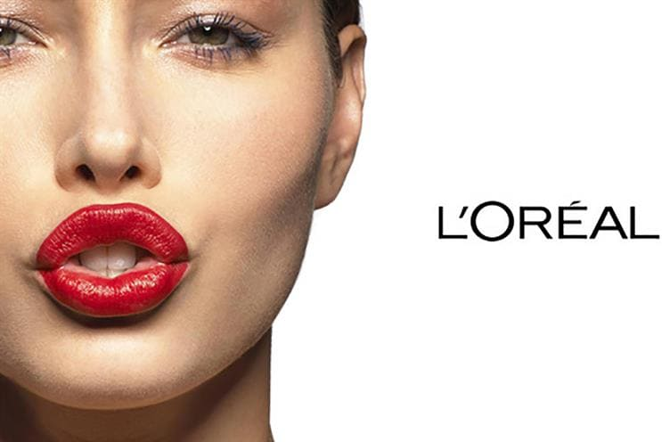

- 
로레알의 DNA:
연구혁신
로레알은 연구혁신에 막대한 투자를 해오고 있으며 화장품 혁신을 성장 모델의 핵심으로 여기고 있습니다. 지난 40년간 130개 이상의 분자를 개발했으며, 주요 유효성분 특허출원에 있어 경쟁사들을 월등히 앞서는 기술력을 보유하고 있습니다.
다양한 브랜드
포트폴리오
로레알은 모발 관리, 염색, 스킨케어, 메이크업, 향수 등 화장품 전체 라인을 망라하는 독보적인 인터내셔널 브랜드 포트폴리오를 보유하고 있습니다.
통합생산방식
로레알은 생산시설을 통합하여, 현재 전 세계에 설립된 로레알의 41개 공장에서 90퍼센트 이상의 화장품을 생산하고 있습니다. 품질과 추적관리를 보장하는 이 모델은 위험을 줄이고 설비를 최적화하여 사용할 수 있게 해줍니다. 로레알의 오퍼레이션 부서는 전 세계의 생산과 제품 유통을 지휘하는 단일 조직입니다.